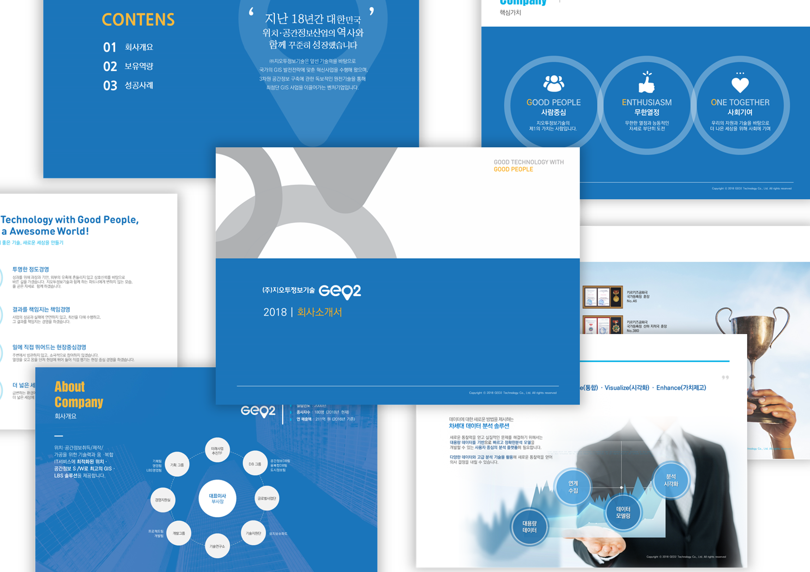
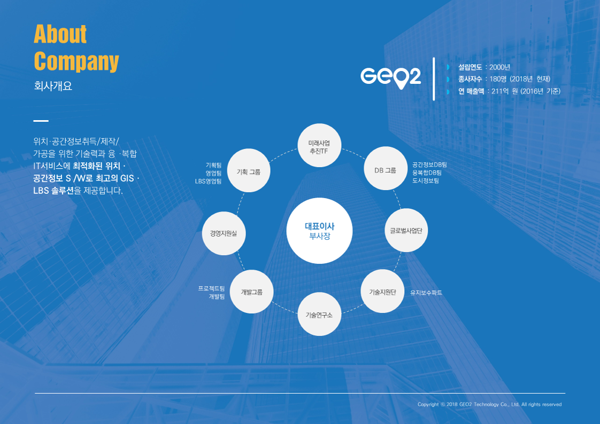
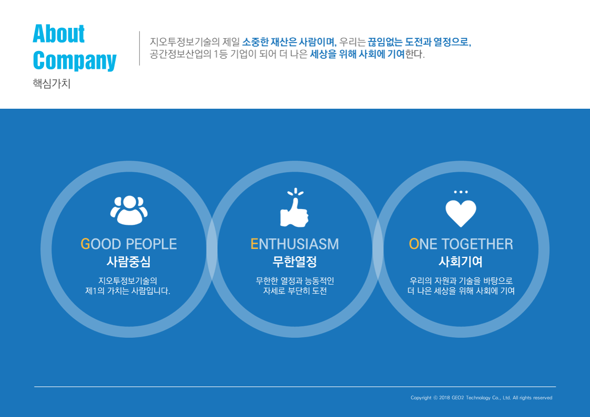
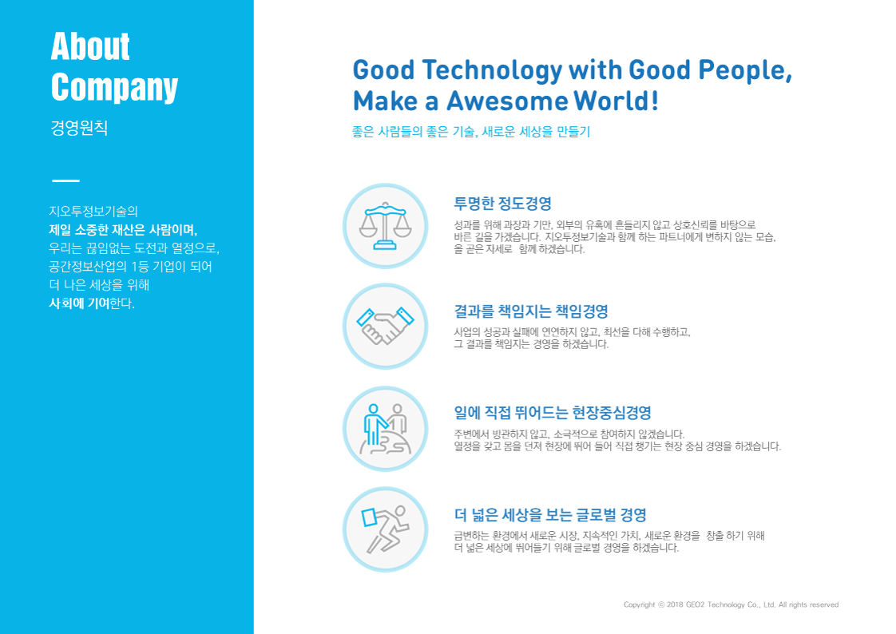
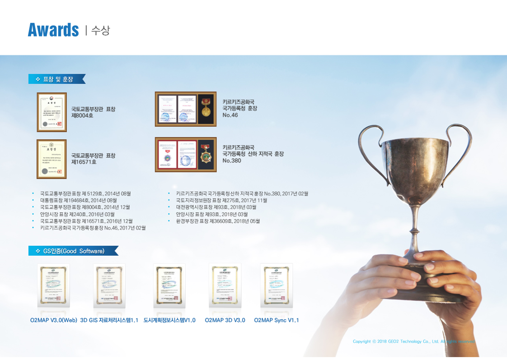
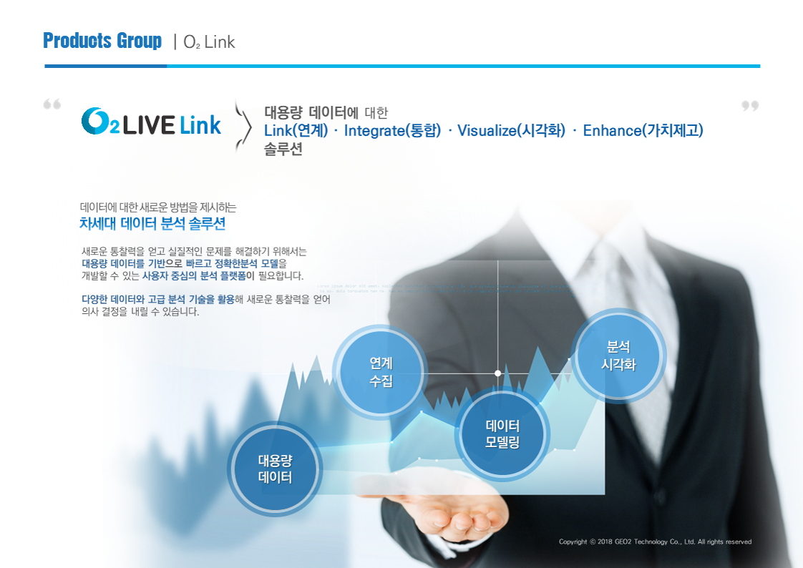

CORPORATE · INFORMATION
GEOTWO.
Corporate Profile
PROFESSIONAL WORK2018

03 / VISUAL PROJECTSCROLL TO EXPLORE ↓
PROJECT OVERVIEW
Complex information. One visual system.
기업의 핵심 가치와 IT 사업영역을 시각적으로 정리하고, 서비스·제품 정보를 다이어그램과 인포그래픽으로 표현한 지오투정보기술 회사소개서 디자인입니다.
기업 개요, 핵심가치, 경영원칙, 수상실적, 제품 솔루션을 동일한 브랜드 언어 안에서 각각의 정보 성격에 맞게 전개했습니다.
TYPEPROFESSIONAL WORK
DISCIPLINESCORPORATE DESIGN / INFORMATION DESIGN / EDITORIAL DESIGN
YEAR2018
COMPLETE WORK / 06
Corporate profile.
01 / 06 ORIGINAL WORK
02 / 06 ORIGINAL WORK

03 / 06 ORIGINAL WORK

04 / 06 ORIGINAL WORK

05 / 06 ORIGINAL WORK

06 / 06 ORIGINAL WORK
